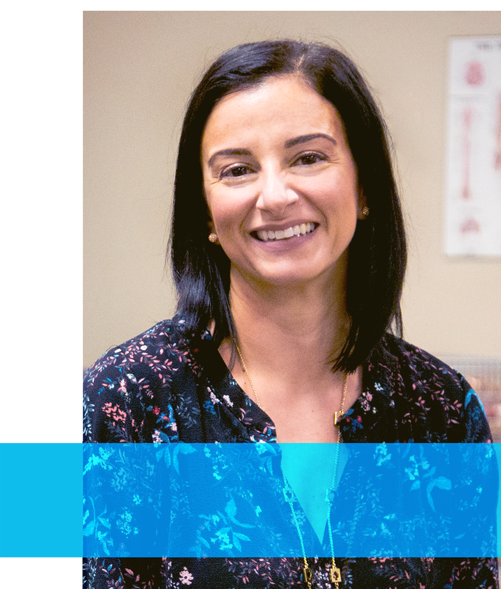

Profile

Thoughts from Patricia Belli
Registered Massage Therapist and Humber College faculty
“I kept hearing, ‘The doctor told me to take these drugs or this medication.’ But there are other kinds of therapies and treatment besides medicine. Medication doesn’t always treat the root cause of musculoskeletal issues; it’s just a band aid. I wanted to help people using a natural approach. At some point I thought I’d really like to give back to the profession and make sure the new generation of therapists are better than the old ones; becoming a professor at Humber was a way to give back 20 years of experience.”
